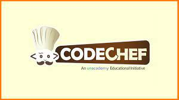

Welcome to My Portfolio
Hi, I'm Jatin Kumar, a B.Tech student specializing in Computer Science. Explore my projects and skills, and get in touch if you'd like to collaborate!
About Me
I'm a B.Tech student at K L University, specializing in Computer Science. I have a strong interest in web development, machine learning, and embedded systems. I am passionate about solving real-world problems through technology and have worked on various projects that showcase my skills and dedication.
I have completed internships at DATA ENGINEERING VIRTUAL INTERNSHIP and AICTE FROM EDUSKILLS. where I gained practical experience in web development and data analysis. I am always eager to learn new things and take on challenging projects.
Download my resume to know more about my qualifications and experience.
Skills
- Programming Languages: C, Java, JavaScript, Python
- Web Development: HTML, CSS, JavaScript, React.js, Node.js
- Database Management: MySQL, MongoDB
- Tools and Platforms: GitHub, visual studio code, idle, pgAdmin, online compilers, PyCharm, Block code, intellij idea
- Operating Systems: Windows, Linux, Android
Projects
Movie/Tv Show Recommendation System
Description: This project develops a movie and TV show recommendation system using user preferences and content features like genres and actors. It enhances user engagement by suggesting personalized content based on individual viewing habits and combines content-based and collaborative filtering techniques for accurate recommendations.
Technologies Used: HTML, CSS, JavaScript, Python, etc.
Links: GitHub Repository
Chatbot With Sentiment Analysis
Description: This project involves creating a chatbot equipped with sentiment analysis capabilities. It responds to user queries while analyzing the sentiment of their messages to provide appropriate and empathetic interactions.
Technologies Used: React, Node.js, Express, MongoDB, etc.
Links: GitHub Repository
Contact Me
-
 jkjatinkumar930@gmail.com
jkjatinkumar930@gmail.com
-
 LinkedIn Profile
LinkedIn Profile
-
 HackerRank Profile
HackerRank Profile
-  CodeChef Profile
-
 GitHub Profile
GitHub Profile
-
 +91 9304668206
+91 9304668206